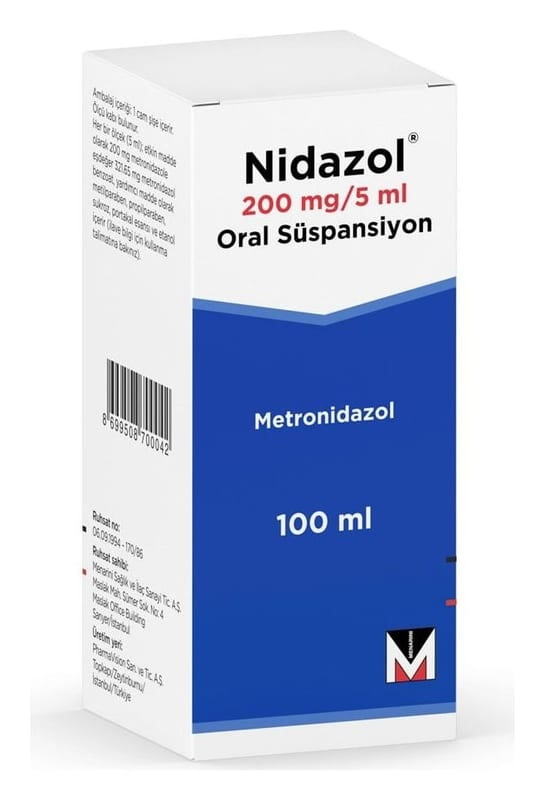

Nidazol 200 mg/5 ml Oral Süspansiyon, 100 ml

Ne için kullanılır
KT · Bölüm 1NİDAZOL, metronidazol benzoat adı verilen bir etkin madde içerir. Bu ilaç, antibiyotikler adı verilen bir gruba dahildir.
Vücudunuzda enfeksiyona yol açan bakterileri ve parazitleri öldürür.
Bu ilaç aşağıdaki durumlarda kullanılır: ● Kan, beyin, akciğer, kemikler, genital (üreme organlarına ait) yol, pelvik bölgesi (iki kalça kemiği arasındaki boşluk), mide ve bağırsak enfeksiyonlarının tedavisi ● Dişeti ülserleri (yara) ve diğer diş enfeksiyonlarının tedavisi ● Bacak yaraları ve basınca bağlı gelişen vücut yaralarının tedavisi ● Ameliyat sonrası gelişebilecek enfeksiyonların önlenmesi Bu ilacı kullanmaya başlamadan önce bu KULLANMA TALİMATINI dikkatlice okuyunuz, çünkü sizin için önemli bilgiler içermektedir. Bu kullanma talimatını saklayınız. Daha sonra tekrar okumaya ihtiyaç duyabilirsiniz. Eğer ilave sorularınız olursa, lütfen doktorunuza veya eczacınıza danışınız. Bu ilaç kişisel olarak sizin için reçete edilmiştir, başkalarına vermeyiniz. Bu ilacın kullanımı sırasında, doktora veya hastaneye gittiğinizde doktorunuza bu ilacı kullandığınızı söyleyiniz. Bu talimatta yazılanlara aynen uyunuz. İlaç hakkında size önerilen dozun dışında yüksek veya düşük doz kullanmayınız.
● Çocuklarda helicobacter pylori (midede enfeksiyona neden olan bir bakteri)enfeksiyonu tedavisi NİDAZOL 100 ml’lik şişelerde, 5 ml’lik kaşık ile piyasaya sunulmaktadır.
Süspansiyon, krem-beyaz renkli, homojen (tek bir madde gibi görünen), viskoz (az akışkan, ağda), portakal esansı kokuludur.